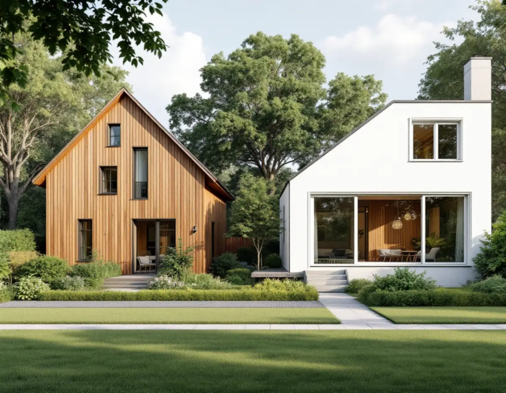
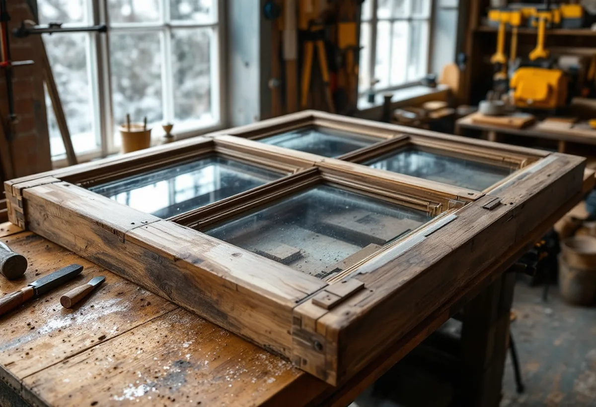
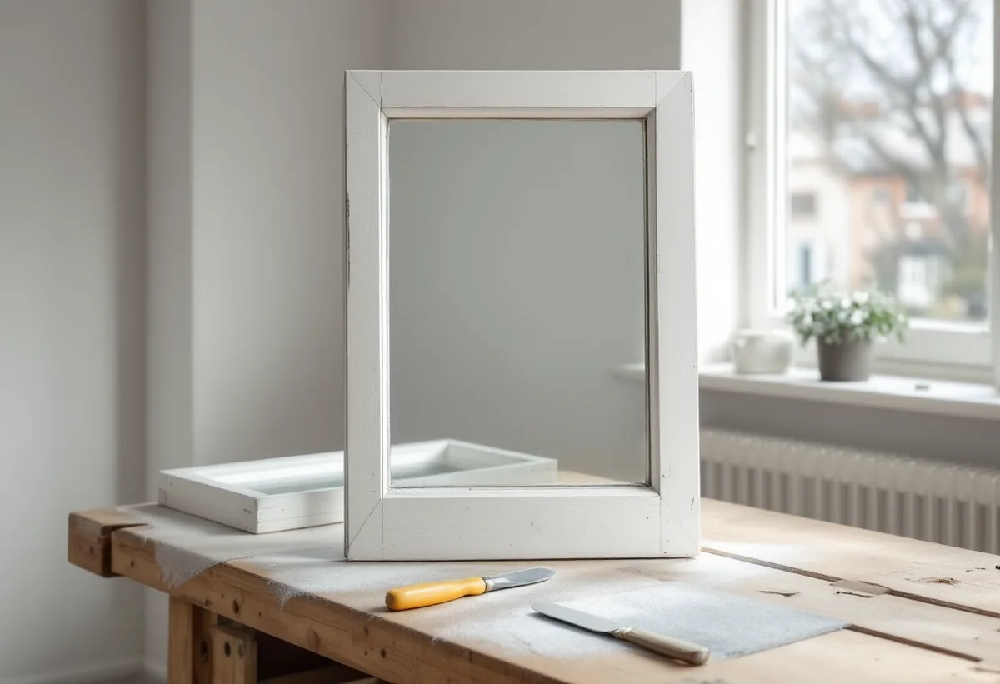

Besiktning
Fönstrens ålder, konstruktion och skador går vi igenom fönster för fönster.
I Mälarhöjden och resten av Hägersten står villor från olika årtionden sida vid sida, och fönstren är byggda på olika sätt beroende på när huset kom till. Geal Entreprenad AB renoverar fönster i villor och radhus i Hägersten och anpassar arbetet efter hur fönstret är tillverkat.

Mälarhöjden växte upp som villasamhälle efter privata initiativ, skriver staden i sin strategi för småhusområden. Villastäderna präglas av en blandning av hustyper från olika epoker, och den successiva kompletteringen speglas i bebyggelsens utformning. Mälarhöjden är markerat som kulturhistoriskt värdefull miljö och har äldre planer med generösa byggrätter.
Enligt stadens områdesfakta för 2025 finns 988 småhus med äganderätt i Mälarhöjden och 955 i stadsdelen Hägersten. I en sådan miljö kan grannhusens fönster vara från helt olika tider, och det märks när de ska renoveras.

Riksantikvarieämbetet beskriver hur spröjsarna kom tillbaka kring sekelskiftet och fram till 1930, med stilideal som hade historiska förebilder. Fönstren i den äldre bebyggelsen har ofta småspröjsade rutor, och från sekelskiftet blev kopplade, inåtgående bågar allt vanligare.
De äldre sammanfogningarna i bågar och karmar går att ta isär, påpekar Riksantikvarieämbetet. Det gör att skadade delar, som en spröjs eller nederdelen av en båge, kan bytas utan att hela bågen tas isär, och att ett gammalt fönster går att renovera gång på gång.
På 1930-talet försvann de spröjsade bågarna igen, och fönsterbågen fick en enda hel glasruta. Samtidigt introducerades limmet i fönsterkonstruktionerna: en handbok från 1931 skriver att alla sammansättningar i fönsterbågar limmas, enligt Riksantikvarieämbetet.
Limmade bågar är svårare att ta isär, så där lagar vi skador genom att skarva in nytt virke i den skadade delen i stället för att demontera bågen. Löst kitt tas bort med ett smalt stämjärn och stor försiktighet, eftersom glaset lätt spricker, särskilt där glasningsstiften sitter.
Är det osäkert om fönstren bara behöver vanligt underhåll eller större reparationer råder Riksantikvarieämbetet att börja med en systematisk besiktning av varje fönster för sig. En sådan inventering ger underlag för en mer exakt kostnadsberäkning, och utan besiktning är det lätt att döma ut fönster som går att bevara.
Med dagens metoder kan målningen ofta göras i en verkstad. Då går det att renovera fönster även på vintern, och resultatet blir enligt Riksantikvarieämbetet jämnare. Medan bågarna är borta sätter vi upp tillfälliga skydd i fönsteröppningarna.
Stockholms stad räknar upp fönsterändringar som kan kräva bygglov, som ny kulör eller nytt material, ändrade profiler och spröjsar, ändrad upphängning och ny indelning. I särskilt kulturhistoriskt värdefulla områden krävs lov även för åtgärder som annars är lovfria, och Stadsmuseets klassificeringskarta ger en första bild av vad som gäller för ditt hus.
En renovering behåller mått, profiler och indelning och räknas som underhåll. Om fönsterbyte i stadsdelen kan du läsa under fönsterbyte i Hägersten.
Oavsett epok är underhållet i första hand ommålning och kittning, skriver Riksantikvarieämbetet. Sol och väta bryter ner färg och kitt på de mest utsatta delarna, och särskilt sydfasaderna är utsatta. Normalt räcker det att kitta om bågens nedre del.
Vi målar med linoljefärg i grundning, mellanstrykning och slutstrykning och tätar innerbågen med tätningslist när fönstret är justerat. Om stadsdelens fasader kan du läsa under fasadrenovering i Hägersten.

Fönstrens ålder, konstruktion och skador går vi igenom fönster för fönster.
Varje fönster och moment står för sig.
Skadade delar byts eller skarvas efter hur bågen är sammanfogad.
Löst kitt tas bort försiktigt och falsen kittas om med linoljekitt.
Linoljefärg i tre strykningar och tätningslist på innerbågen.
Vi går igenom fönstren och skriver ner kulör och material.
Skatteverket räknar reparation av fönster och målning av fönster på ett småhus som rotarbete. Du ska äga huset när arbetet utförs.
Avdraget är högst 30 procent av arbetskostnaden, högst 50 000 kronor per person och år och högst 75 000 kronor tillsammans med rutavdrag. Material och resor ger inget avdrag. Geal drar avdraget direkt på fakturan.
Antalet fönster, hur de är konstruerade, skadorna i virket, mängden spröjs och om fönstren ska tätas eller få innerbåge. Efter ett gratis platsbesök får du ett skriftligt kostnadsförslag.
Byta eller renovera fönster.
Fönsterbyte i Stockholm →Takbyte, takbesiktning och plåtarbeten.
Takläggare i Hägersten →Kuperad villastad och vattentryck.
Attefallshus i Hägersten →Bostadsrätten, golvbrunnen och fallet.
Badrumsrenovering i Hägersten →Kuperad tomt, stödmur och dränering.
Byggföretag i Hägersten →Trävillor, färglager och skonsam färgborttagning.
Fasadmålning i Hägersten →Småstugor, typritningar och panel.
Fasadrenovering i Hägersten →Villorna, kartan och spröjsen.
Fönsterbyte i Hägersten →Golv i källare och suterrängvåning.
Golvläggare i Hägersten →Slipa och spara parketten i en äldre lägenhet.
Golvslipning i Hägersten →Efterkrigstidens lägenheter och asbestprov.
Köksrenovering i Hägersten →Lägenheter, villor vid Mälaren och radhus.
Målare i Hägersten →Låglutande tak och takavvattning i Hägersten.
Plåtslagare i Hägersten →Verandor, dörrar och snickeridetaljer på villan.
Snickare i Hägersten →Samma material eller ett nytt.
Takbyte i Hägersten →Villastad, radhuslänga och brandskydd.
Tillbyggnad i Hägersten →